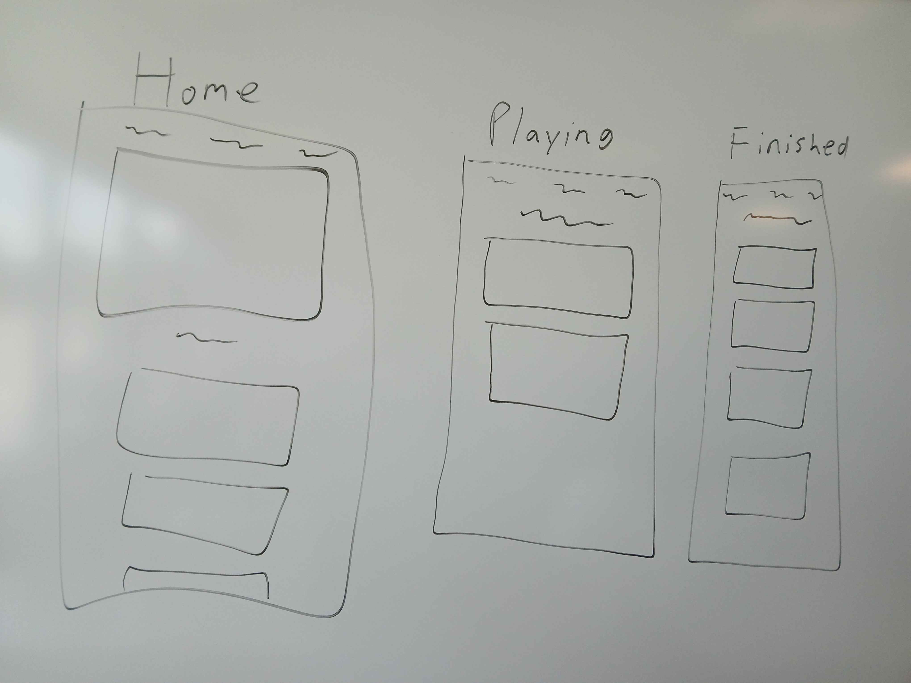

The site is meant to help those who play a variety of different
video games track the games they play and have finished. The site
will pull an api for video games, allowing the user to search for
any game with a search bar. The user can then add any game into 
one of two lists: A finished list and a currently playing list.

With Javascript, I intend to use it to craft the indivdual cards
that will house each game showed. I will also require Javascript
to add specific games that the user selects into a new page and 
a new array.

I will start this project with building the basic site framework
for the three pages I plan on using, both the simple html and css.
Once the basic structure is complete, I will code out the indivdual
card template needed for the games. These cards will require a picture,
name, other basic information, and the two buttons that would add
the games to the other lists. I would then work on ensuring that
the buttons add the games into an array that would hold the games
once the button is clicked.



local storage for saving the lists
fetch for calling the api

rmolzp4j15n9tnrzc2ypond61gwnl2 -- Client ID
ry63yaiss793ek84k1uxsr4yfiu4kv -- Client Secret